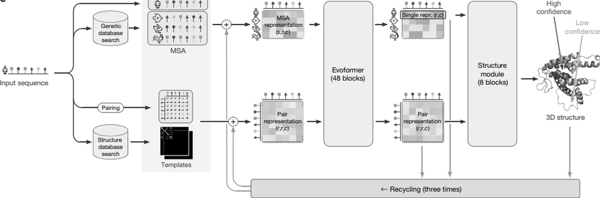
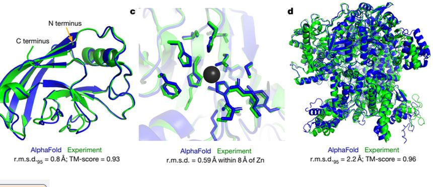
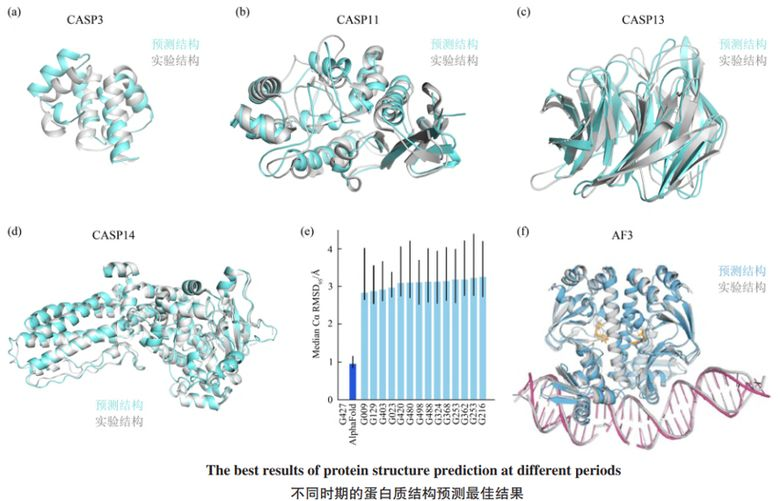
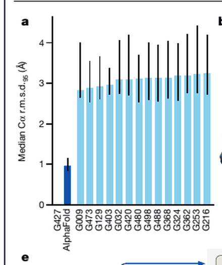
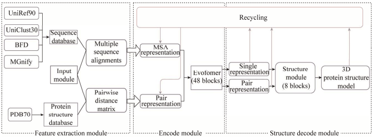
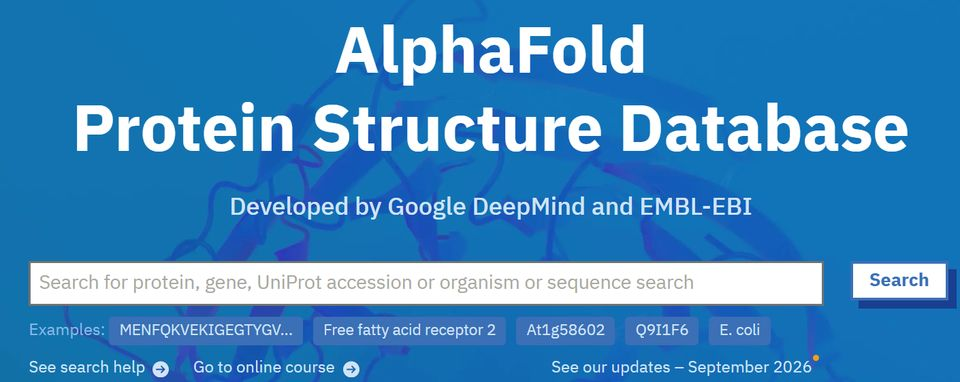

2.1预测问题的由来
2.2原理

两条信息流
MSA 表示（s, r, c）编码同源序列的保守性与协变性；配对表示（r, r, c）编码残基间几何关系。两者在每个区块中反复交换信息[8]。
输出与回环
结构模块以等变注意力直接优化原子坐标，给出逐残基 pLDDT 与残基对 PAE；网络重复三轮 recycling，使序列、距离与坐标逐步自洽[8]。
2.2.1 MSA 与共演化
同一家族的序列在进化中协同变化：若两个残基在空间上相邻，其一突变常伴随另一个的补偿突变。把这种协变关系统计出来，就等于得到一张“远距离接触”的弱约束图谱[8]。
MSA 的深度直接决定信号强度：同源序列越多，协变越显著；对孤儿蛋白或人工设计序列，MSA 往往稀疏甚至为空——这也是后来语言模型要解决的问题[13]。

同源序列越多，共变信号越强；但收益会饱和。拖动滑块，看定性趋势。
2.2.2 数据库与训练数据
结构来源
PDB 自 1971 年积累，至今约 26 万条实验结构；AlphaFold2 训练集约 17 万条链，以单体为主。
自蒸馏
约 25% 来自 PDB 已知结构，75% 来自模型预测结构；以带噪但量大的数据训练，让网络学会纠正更难的折叠[8]。
循环迭代
先给出粗略结构假设，再作为额外输入送回网络重复检验，要求结果同时满足 MSA 与结构约束[8]。
2.2.3 pLDDT 判读器（互动）
pLDDT 是模型自评的局部置信度（0–100）。拖动滑块，看看不同区间该怎么用：
2.3发展

2020 年 CASP14：AlphaFold2 中位 GDT 92.4，主链 Cα r.m.s.d. 0.96 Å（次优约 2.8 Å），全原子精度约 1.5 Å 对次优 3.5 Å 的差距被反超[8]。
此后进入版本迭代：AF2 → AF2-Multimer → AF3（2024），能力从单体扩展到核酸、配体与共价修饰[10]；同期 AlphaFold 数据库覆盖 2 亿余条结构[3,4]。


2.4应用
- 结构解析辅助：作为分子置换的搜索模板，或与电镜密度图拟合，缩短建模周期[5,6]。
- 功能与机制研究：为缺乏实验结构的蛋白提供结构假设，用于突变效应与口袋分析[4]。
- 药物发现：辅助可成药性评估、虚拟筛选与先导化合物优化；结合构象仍需实验确证[3,6]。
- 规模化分析：数据库化改变了使用方式——先查库、再算新[3,4]。
